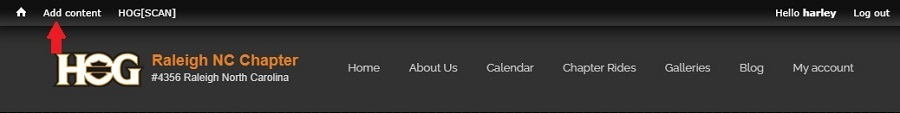
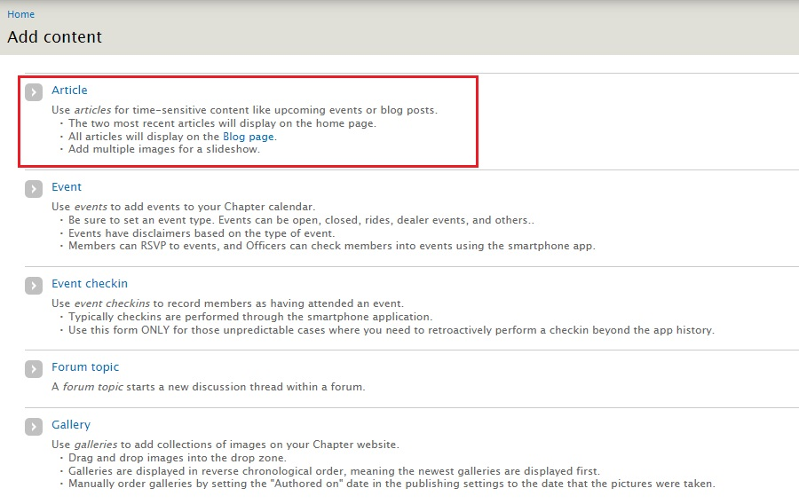
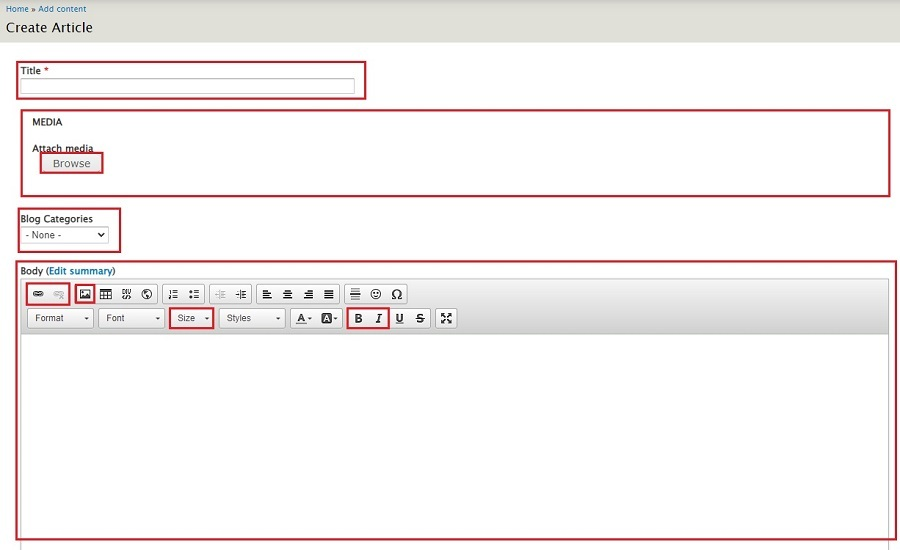
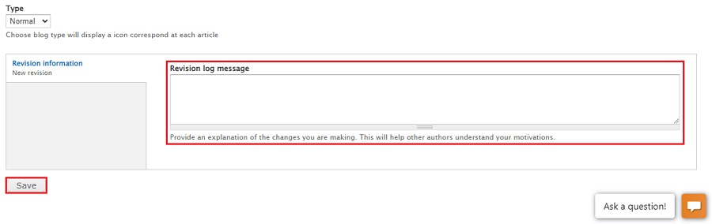

Create a Blog Entry
General notes, terminology and policies
- There are two environments in which you can work;
- The sandbox environment is where you can test and try things out to familiarize yourself with the steps you will be going through. The sandbox environment starts with dev. Our sandbox environment is https://dev.raleighhog.com
- The production environment is the site that all members see. This is where you make the changes that chapter members see. Our production environment is https://www.raleighhog.com
- Please note that prior to doing anything in the production environment you can test in the sandbox environment first. This environment is used for testing and is not seen by members.
- Your login credentials are the same for both environments
- Your webmaster will also help with any questions you may have
- Last names, phone numbers and/or member personal email addresses are not to be displayed in any forward facing document so they are not put in any Blog entry. The Blog is forward facing.
- 'Forward facing' means any page that a non-authenticated user has access to. A non-authenticated user is one that has not successfully logged in.
- The policy of maintaining privacy by not exposing last names, phone numbers, personal email addresses, personal motorcycle information, etc is from HOG national.
- From the HOG Chapter Handbook, "Harley-Davidson discourages H.O.G.® chapters from publishing any photographs of minor children, even with permission from a parent or guardian". We will adhere to this policy.
Create the Entry
- Login to your account and you will see a smaller Navigational Bar (navbar) on top of the Chapter navbar. See image below 
- Click Add content to go to the following screen... See image below
- Article - creates a Blog entry, this is the purpose of this document
- Event - creates an event on the calendar, not used here and a different document
- Event checkin - the check-in process uses the HOG[SCAN] app, this is not used
- Forum topic - forum has been turned off for the website, this is not used
- Gallery - allows adding to the Gallery, not used here and a different document

- Click Article and the Create Article page opens... see image below 
- Title is a required field. Give a title that is informative and makes a member want to read the entry.
- Media - attach one image here. As with the title, it should be something that is eye-catching and will make members want to read the blog entry.
- Blog Categories - choose a fitting category or leave it blank
- Body (Edit summary) - will contain the text and any pics for the blog entry. Hover over an icon to see a tooltip pop-up of the function of that icon. The icons highlighted in red are ones that are of use. The rest can be ignored as there is no need to use HTML/CSS to style the copy.
Link icon - e.g. used to provide a link if neededImage icon - e.g. used to include any additional images you may want to include in the body of the blogSize dropdown - e.g. the font size defaults to 14px. It reads easier if you choose 16 from the dropdownBold icon - e.g. used to make text stand outItalic icon - e.g. usually a title is shown in italics
- Scroll to the bottom of the page to complete. see image below
- While optional, it's always good to leave a brief sentence regarding what you did. For instance, "initial blog create" or if editing, a brief note on what you changed or added. It helps the next person understand what was done.
- Click the Save button
- The Blog entry is now viewable on the website